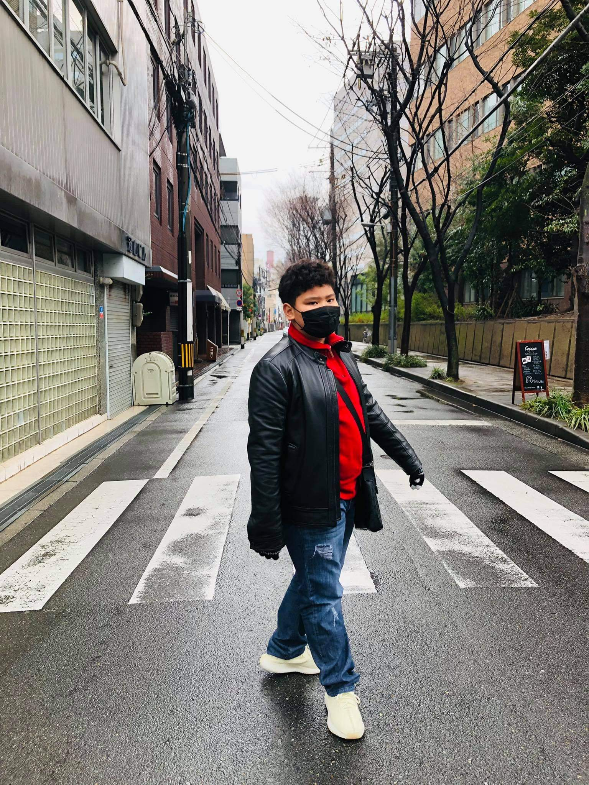

Japan, Osaka
Hello everyone I am Isaac and I will tell you about my experience travelling to Osaka, Japan. Whenever people think of Japan the words that pop up in their heads are Cherry blossoms, Cold, Their cuisine or even Manga & Anime. And for me it was a great experience being in Osaka. We ate lots of great food there and even in their local shops their ramen was amazing.
There are even amazing architecture from the past. For example Osaka castle. And I even went to Universal studios Osaka with their Harry Potter attractions. I also must say that Japan is full of cool collectables and merchendise you can buy like action figures and statues